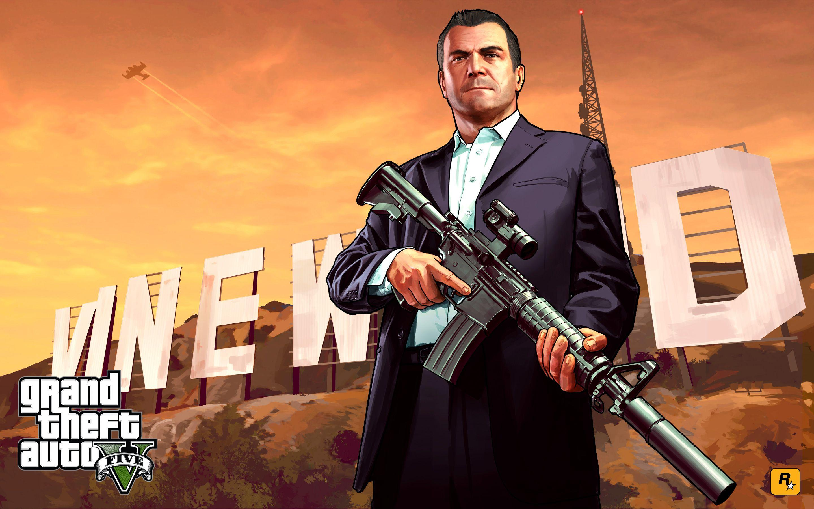

Grand Theft Auto V (prescurtat adesea ca GTA V sau GTA 5) este un joc video de acțiune-aventură de tipul open world dezvoltat de Rockstar North și publicat de Rockstar Games. Este al cincilea titlu principal din seria Grand Theft Auto și al cincisprezecelea din serie per total, precum și al primul (și singurul) din era 5 a acesteia. Jocul a fost lansat pentru Xbox 360 și PlayStation 3 pe 17 septembrie 2013, iar mai târziu și pentru Xbox One și PlayStation 4 pe 18 noiembrie 2014, PC pe 14 aprilie 2015,și urmează sa fie lansat pentru PlayStation 5 și Xbox Series X și Series S în 2021.
Dezvoltarea jocului a început la scurt timp după lansarea lui Grand Theft Auto IV și a fost realizată de mai multe studiouri ale Rockstar Games din întreaga lume, jocul incorporând mai multe aspecte din alte titluri de la Rockstar anterioare, precum Red Dead Redemption și Max Payne 3, în timp ce conceptul de avea trei protagoniști a fost inspirat din GTA IV și DLC-urile sale.
Gameplay: Acțiunea se desfășoară în orașul fictiv Los Santos, inspirat de Los Angeles, în anul 2013, și zonele vaste de păduri și deșert care îl înconjoară, formând împreună statul fictiv San Andreas (inspirat de statul California).Povestea jocului urmărește trei protagoniști: Franklin Clinton, un tânăr afro-american care face parte dintr-o bandă stradală și își dorește o carieră mai profitabilă, Michael De Santa, un fost spărgător de bănci ce este nemulțumit de pensionarea sa, și Trevor Philips, un dealer de droguri și traficant de arme cu probleme de controlul furiei. În timp ce încearcă să comită diferite jafuri pentru a se îmbogăți, cei trei își găsesc viețele personale în declin, și întâmpină opoziții din partea unei agenții guvernamentale corupte, figuri interlope influente și alți inamici. Pe lângă modul single-player, Grand Theft Auto V include un mod multiplayer online intitulat Grand Theft Auto Online, ce permite la până 30 de jucători să exploreze lumea jocului și să completeze mai multe misiuni cooperative sau competitive.
Dezvoltarea jocului a început la scurt timp după lansarea lui Grand Theft Auto IV și a fost realizată de mai multe studiouri ale Rockstar Games din întreaga lume, jocul incorporând mai multe aspecte din alte titluri de la Rockstar anterioare, precum Red Dead Redemption și Max Payne 3, în timp ce conceptul de avea trei protagoniști a fost inspirat din GTA IV și DLC-urile sale. Mare parte din dezvoltare a constant în crearea lumii jocului, numeroși membri ai echipei organizând excursii până în Los Angeles pentru a se inspira de acesta și a crea un oraș cât mai realistic cu putință. Coloana sonoră a jocului este formată din mai multe melodii originale create de diferite echipe de producători pe parcursul anilor.